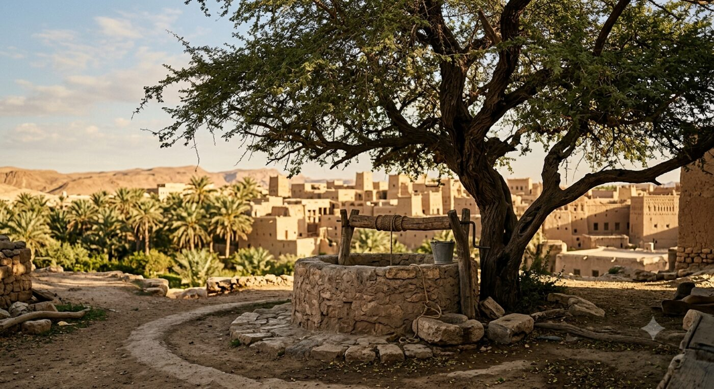

Un arbre du Levant, de Mésopotamie et d'Afrique de l'Est
Ziziphus spina-christi, le « Christ's thorn jujube », est un arbuste ou petit arbre épineux à feuillage persistant, natif du Levant, de l'Afrique de l'Est et de la Mésopotamie (Wikipédia (EN)). Il pousse spontanément dans les vallées jusqu'à environ 500 mètres d'altitude, tolère la sécheresse et la chaleur, et se rencontre aujourd'hui dans la vallée du Jourdain, autour de Jérusalem, dans les monts Hajar aux Émirats arabes unis, ainsi qu'en Égypte, en Arabie saoudite, au Yémen, en Éthiopie, au Soudan et en Libye (Wikipédia (EN) ; World Agroforestry Centre, fiche technique).
Une plante médicinale depuis l'Égypte ancienne
L'usage du sidr en médecine ne date pas d'hier. Une étude publiée en 2016 dans la revue Phytomedicine a directement testé des prescriptions égyptiennes antiques à base de Ziziphus spina-christi, historiquement employées contre les gonflements, les douleurs et la chaleur inflammatoire. Les chercheurs ont identifié cinq composés actifs — dont l'épigallocatéchine et la gallocatéchine — capables d'inhiber des voies inflammatoires comme NF-κB, confirmant en laboratoire une partie de ce que la pharmacopée égyptienne pressentait il y a plus de trois mille ans (Kadioglu et al., Phytomedicine, 2016).
Le sidr, arbre cité dans le Coran
Dans la tradition islamique, le sidr occupe une place particulière. L'arbre est mentionné à quatre reprises dans le Coran : dans la sourate Saba (verset 16), la sourate Al-Waqi'ah (versets 27 à 33) et la sourate An-Najm (versets 7 à 12 et 16-17). Cette dernière évoque la « Sidrat al-Muntaha », le « lotier de la limite », un arbre céleste marquant la limite ultime que ni ange ni humain ne peuvent franchir, que le prophète Muhammad (pbsl) aurait contemplé lors du voyage nocturne (Mi'raj) (Wikipédia — Sidrat al-Muntaha). Par ailleurs, plusieurs hadiths authentiques rapportent que le prophète recommandait de laver le corps des défunts avec de l'eau mélangée à des feuilles de sidr — un usage rituel qui perdure aujourd'hui (voir notre article sur les traditions culturelles du sidr).
Une trace dans la tradition chrétienne
Le nom scientifique lui-même, spina-christi (« épine du Christ »), renvoie à une tradition selon laquelle cet arbre aurait fourni le bois de la couronne d'épines de Jésus lors de la Crucifixion. L'exégète biblique Matthew George Easton contestait toutefois cette attribution, jugeant les branches de Z. spina-christi trop cassantes pour être tressées en couronne, et proposait plutôt Ziziphus lotus, une espèce cousine (Wikipédia (EN)).
L'arbre le plus vénéré du Moyen-Orient
Selon certaines analyses, Ziziphus spina-christi serait la seule espèce d'arbre considérée comme « sainte » par l'ensemble des musulmans — au-delà de son statut plus large d'« arbre sacré » au Moyen-Orient (Wikipédia (EN)). Cette vénération s'incarne très concrètement dans certains spécimens : à Ir Ovot, dans le sud d'Israël, se trouve le plus vieux Ziziphus spina-christi connu, estimé entre 1 500 et 2 000 ans, localement considéré comme l'arbre même dont serait issue la couronne d'épines du Christ (Times of Israel, « Rooted in Israel's history »).

Le sidr n'est pas qu'une plante cosmétique : c'est un arbre chargé d'histoire, vénéré depuis des millénaires bien avant d'apparaître dans nos salles de bain.
Un symbole national encore vivant aujourd'hui
Ziziphus spina-christi est aujourd'hui l'arbre national du Qatar et le symbole de la région d'Arabah, à cheval entre Israël et la Jordanie (Wikipédia (EN)). Au Yémen, ses fleurs donnent naissance à l'un des miels les plus réputés au monde, le miel de sidr, récolté durant une courte saison hivernale lorsque l'arbre est en fleur et qu'aucune autre plante mellifère n'est disponible — ce qui en fait un miel mono-floral rare et recherché (Hives of Yemen, « The story of the sacred Sidr tree »).
Sources
- Wikipédia (EN) — Ziziphus spina-christi
- World Agroforestry Centre — Fiche technique Zizyphus spina-christi
- Kadioglu et al. — « Evaluating ancient Egyptian prescriptions today », Phytomedicine, 2016
- Wikipédia — Sidrat al-Muntaha
- Times of Israel — Rooted in Israel's history, five remarkable trees
- Hives of Yemen — The story of the sacred Sidr tree